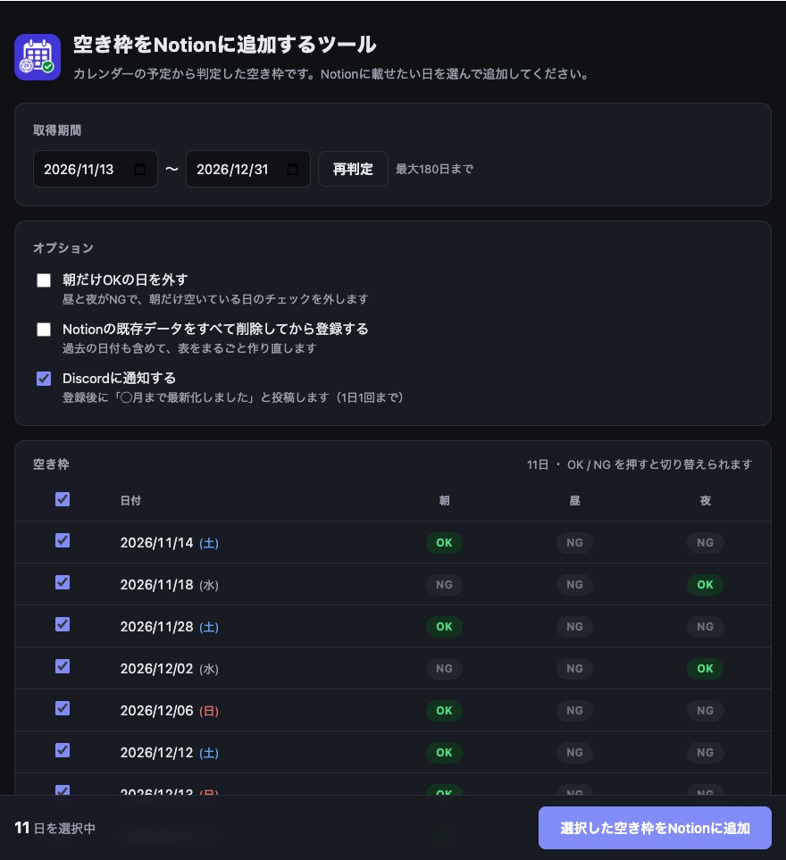

しくみ
-
空き枠を判定
Web アプリを開くと、カレンダーの予定から各日の朝・昼・夜が空いているかを判定します。
-
確認して登録
判定結果の表を見て、登録したい日を選んでボタンを押すと Notion に登録されます。
-
Discord に通知
登録が終わると、空き枠表の URL を添えて Discord にお知らせします（任意）。
自動で毎日書き換えるのではなく、判定結果を自分の目で確かめてから登録する作りです。カレンダーに入れていない予定がある日は、チェックを外して登録しないようにできます。
実際の画面

できること
朝・昼・夜で判定
時間帯ごとに、予定が少しでも重なれば NG、空いていれば OK にします。
手で直してから登録
OK / NG は押すだけで切り替わります。直したところは印が付くので分かります。
メモは残したまま更新
同じ日付のページがあれば朝・昼・夜だけを書き換えるので、備考のメモは消えません。
通知は1日1回
同じ日に何度登録し直しても、Discord への通知は1回だけです。
前日の夜を空けない
特定の予定がある日の前夜を NG にできます（例：仕事の大事な日の前の夜）（任意）。
テンプレートを用意
空き枠表の Notion テンプレートを複製すれば、すぐに使い始められます。
判定のルール
| 時間帯 | 判定する時刻 |
|---|---|
| 朝 | 9:00〜12:00 |
| 昼 | 13:00〜19:00 |
| 夜 | 21:00〜24:00 |
- 終日の予定がある日は、朝・昼・夜すべて NG にします。
- 朝・昼・夜すべて NG の日は、一覧に出しません。
- 判定に使うのは自分が所有しているカレンダーだけです（祝日カレンダーなどは対象外）。決めたカレンダーを外すこともできます。
必要なもの
- Google アカウント（予定を入れているカレンダー）
- Notion アカウント（空き枠表を置くワークスペース）
- 通知先の Discord サーバー（任意。Webhook を作れる権限が必要です）
どれも無料で使えます。コードを書く必要はなく、ファイルを Google Apps Script に置いて設定するだけです。
安全性について
- Notion のシークレットや Discord の Webhook URL は、自分の Apps Script の中にだけ保存します。作者を含め、ほかの人には送られません。
- Web アプリは「自分のみ」がアクセスできる設定で公開します。カレンダーを読めるのは自分だけです。
- Notion に書き込むのは、日付と朝・昼・夜の OK / NG だけです。予定のタイトルや中身は書き込みません。
はじめかた
- Google Apps Script で新しいプロジェクトを作り、
src/の3つのファイルを置く - 空き枠表のテンプレートを、自分の Notion に複製する
- Notion でインテグレーションを作り、空き枠表に接続する
- スクリプト プロパティに、Notion のシークレットとデータベース ID を登録する（Discord に通知するなら Webhook URL も）
checkConfigを実行して、設定を確かめる- 「自分のみ」がアクセスできる Web アプリとしてデプロイし、開いた画面から登録する
詳しい手順と設定項目の一覧は、GitHub の README にまとめています。
質問・不具合の報告
分かりにくいところや動かないところがあれば、GitHub の Issue で気軽に教えてください。